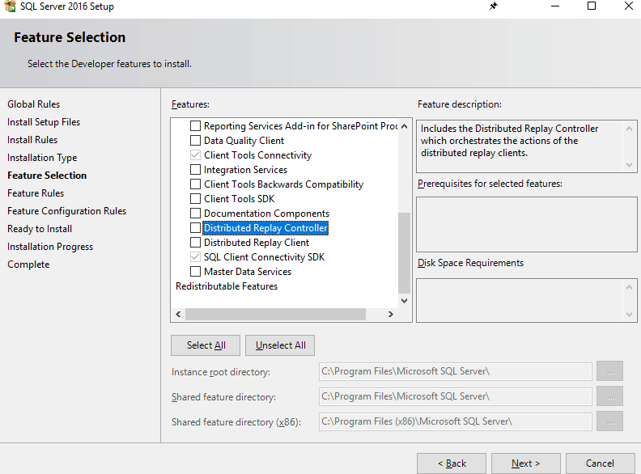
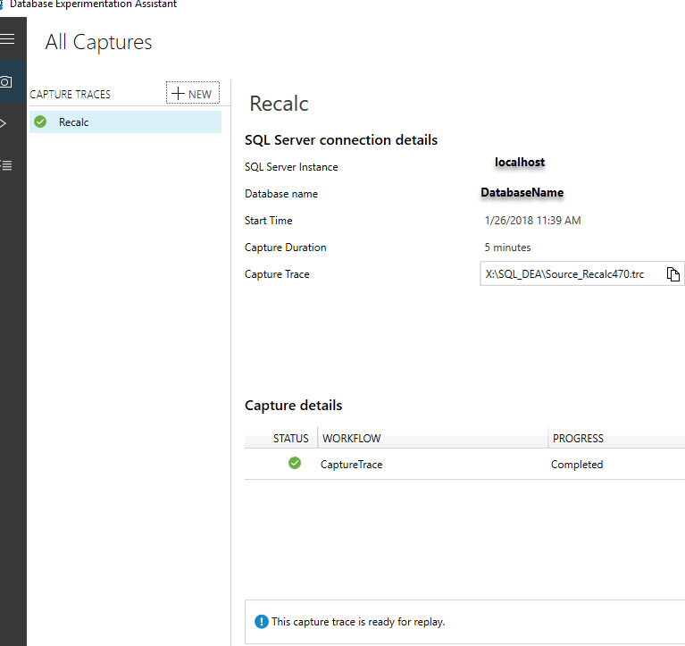
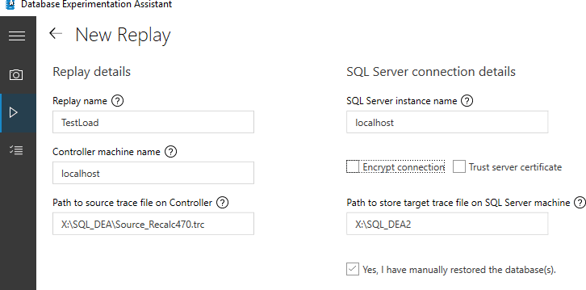
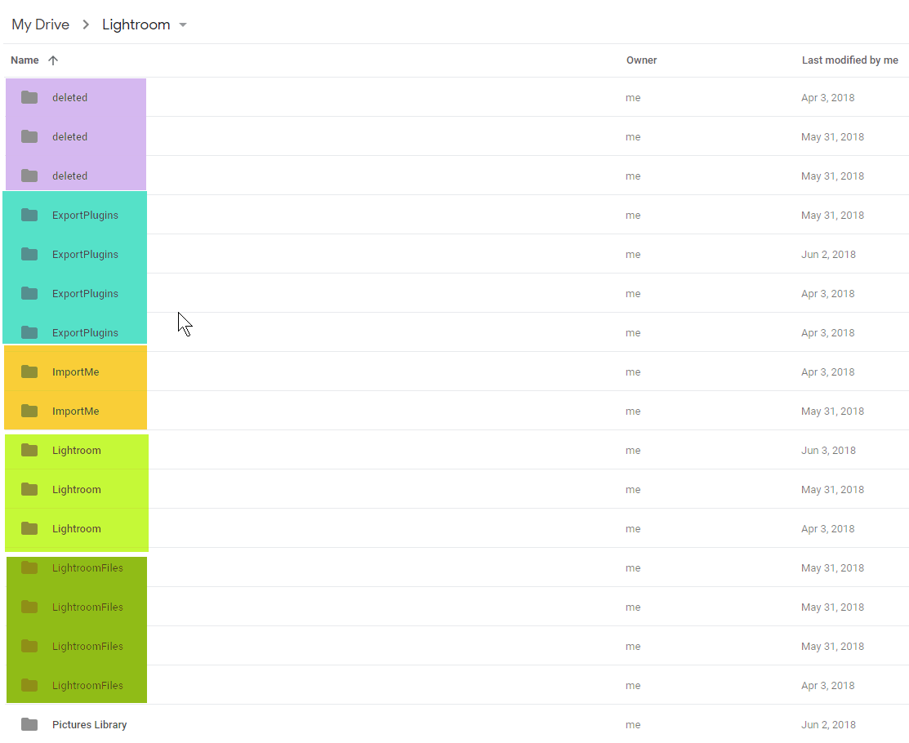
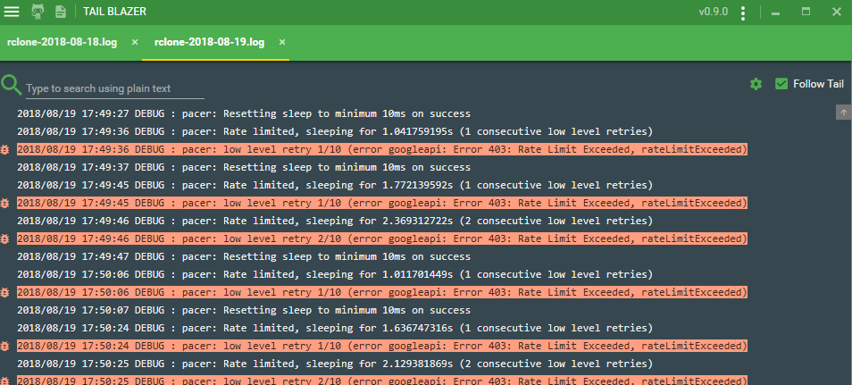
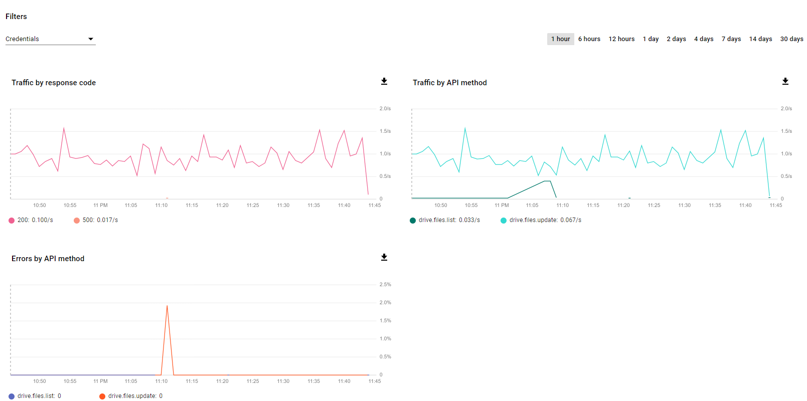
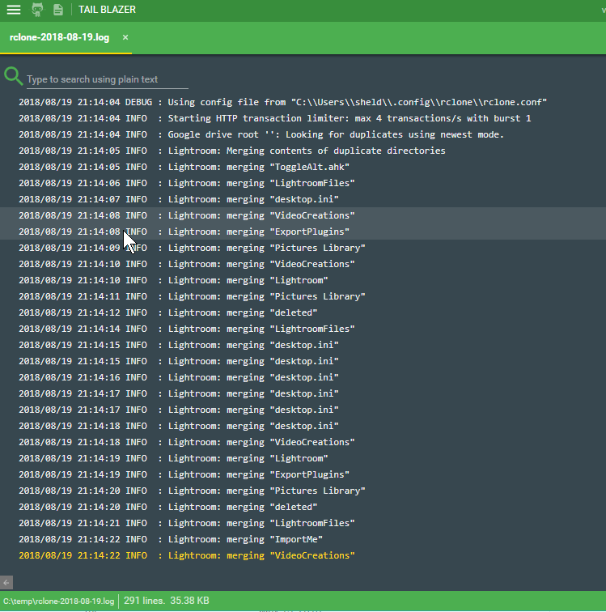
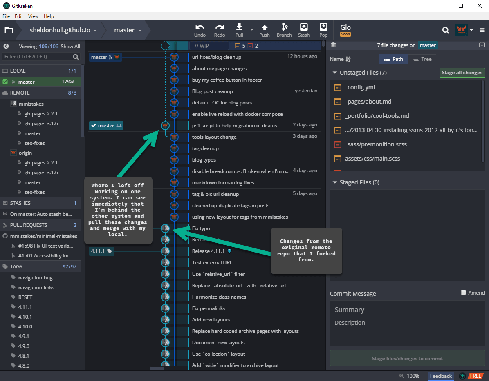

2019-04-18T10:23:31-06:00
This infernal keyboard lag is killing me. I'm guessing it's due to some OS corruption as my disk is going bad and bad sector warnings keep increasing. Blah! 
This infernal keyboard lag is killing me. I'm guessing it's due to some OS corruption as my disk is going bad and bad sector warnings keep increasing. Blah!
Today I learned how to create a microblog / microblogs section in my hugo layout by frakensteining together some styling tweaks to part of jnjosh.com hugo theme. 
Some effort I spent in researching Type Binding in Stack Overflow to help answer a question by Chris Oldwood helped me solidify my understanding of the best way to debug more complicated scenarios such as this in PowerShell.
Spent some digging into this and this is what I've observed.
First for clarity I do not believe that you should consider the NullString value the same as null in a basic comparison. Not sure why you need this either, as this is normally something I'd expect from c# development. You should be able to just use $null for most work in PowerShell.
if($null -eq [System.Management.Automation.Language.NullString]::Value)
{
write-host "`$null -eq [System.Management.Automation.Language.NullString]::Value"
}
else
{
write-host "`$null -ne [System.Management.Automation.Language.NullString]::Value"
}
Secondly, the issue is not necessarily because of the call operator, ie &. I believe instead you are dealing with underlying parameter binding coercion. Strong data typing is definitely a weak area for PowerShell, as even explicitly declared [int]$val could end up being set to a string type by PowerShell automatically in the next line when writing Write-Host $Val.
To identify the underlying behavior, I used the Trace-Command function (Trace Command) .
I changed the Use-Dot to just call the function as no write-host was needed to output the string.
function Use-Ampersand
{
param(
[string]$NullString = [System.Management.Automation.Language.NullString]::Value
)
Format-Type $NullString
&cmd.exe /c exit 0
}
The Format-Type I modified to also use what is considered a better practice of $null on the left, again due to type inference.
function Format-Type($v= [System.Management.Automation.Language.NullString]::Value)
{
if ($null -eq $v)
{
'(null)'
}
else {
$v.GetType().FullName
}
}
To narrow down the issue with the data types, I used the following commands, though this is not where I found insight into the issue. Theyh when called directly worked the same.
Trace-Command -Name TypeConversion -Expression { Format-Type $NullString} -PSHost
Trace-Command -Name TypeConversion -Expression { Format-Type ([System.Management.Automation.Language.NullString]$NullString) } -PSHost
However, when I ran the functions using TypeConversion tracing, it showed a difference in the conversions that likely explains some of your observed behavior.
Trace-Command -Name TypeConversion -Expression { Use-Dot} -PSHost
Trace-Command -Name TypeConversion -Expression { Use-Ampersand} -PSHost
# USE DOT
DEBUG: TypeConversion Information: 0 : Converting "" to "System.String".
DEBUG: TypeConversion Information: 0 : Converting object to string.
DEBUG: TypeConversion Information: 0 : Converting "" to "System.Object". <<<<<<<<<<<
DEBUG: TypeConversion Information: 0 : Converting ".COM;.EXE;.BAT;.CMD;.VBS;.VBE;.JS;.JSE;.WSF;.WSH;.MSC;.PY;.PYW;.CPL" to "System.String".
DEBUG: TypeConversion Information: 0 : Result type is assignable from value to convert's type
OUTPUT: (null)
# Use-Ampersand
DEBUG: TypeConversion Information: 0 : Converting "" to "System.String".
DEBUG: TypeConversion Information: 0 : Converting object to string.
DEBUG: TypeConversion Information: 0 : Converting "" to "System.String". <<<<<<<<<<<
DEBUG: TypeConversion Information: 0 : Converting null to "". <<<<<<<<<<<
DEBUG: TypeConversion Information: 0 : Converting ".COM;.EXE;.BAT;.CMD;.VBS;.VBE;.JS;.JSE;.WSF;.WSH;.MSC;.PY;.PYW;.CPL" to "System.String".
DEBUG: TypeConversion Information: 0 : Result type is assignable from value to convert's type
OUTPUT: System.String
The noticeable difference is in Use-Ampersand it shows a statement of Converting null to "" vs Converting "" to "System.Object".
In PowerShell, $null <> [string]''. An empty string comparison will pass the null check, resulting in the success of outputting GetType().
Why it's doing this, I'm not certain, but before you invest more time researching, let me provide one piece of advice based on learning the hard way.
If start dealing with issues due to trying to coerce data types in PowerShell, first consider if PowerShell is the right tool for the job
Yes, you can use type extensions. Yes, you can use .NET data types like $List = [System.Collections.Generic.List[string]]::new() and some .NET typed rules can be enforced. However, PowerShell is not designed to be a strongly typed language like C#. Trying to approach it like this will result in a many difficulties. While I'm a huge fan of PowerShell, I've learned to recognize that it's flexibility should be appreciated, and it's limits respected.
If I really had issues that required mapping [System.Management.Automation.Language.NullString]::Value so strongly, I'd consider my approach.
That said, this was a challenging investigation that I had to take a swing at, while providing my 10 cents afterwards.
After posting my answer, I found another answer that seemed relevant, and also backs up the mentioning of not using [NullString] normally, as its usage in PowerShell is not really what it was designed for.
Stackoverflow specific content republished under CC-BY-SA
If you are about to perform a last minute migration here's a couple tips as you jump ship from Hipchat and move to Slack. Hipchat is sunsetting I believe on Feb 15th, so I figured I'd share what I do have in case it's helpful, as it won't stay tremendously relevant for long.
Export the hipchat content to a file and upload to your own s3 bucket. That will ensure you have some time to work through the migration and reverse it and try again if you aren't happy with the results.
Don't even consider it. The slack import can't add delta content for private messages and private rooms. This means you'd get a lot of duplicate rooms being created. It's better to do the migration import in one batch rather than try to incrementally pull in content. Don't go down this route, as I didn't discover this till later in the process resulting in a time-crunch.
You've migrated to a new domain, but your Hipchat accounts all have the previous email which you've setup as email aliases. You can't easily change in Hipchat due to the fact it's set a profile level, "synced" to the Atlassian account. I had no luck in working on changing this so I instead leveraged the Slack API to bulk update during migration (after all the accounts were created). I mapped the active directory user to the current user by parsing out the email aliases and reversing this. I also created an alternative approach for those that had no matching email alias, and iffy full name matching to use fuzzy matching based soley on last name in the email address.
The Slack Migration tool is pretty good, but the auto renaming had some rename behavior that didn't align in a clean manner with what my naming convention was going to be. This means to simplify your migration, it's better to rename your Hipchat rooms prior to migration so all your rooms now create slack channels that don't have to be renamed again. Also, if you pull in a delta of content for public rooms, it can automatically match and incrementally add content (this doesn't work for private content).
It's painful. Hipchat's going into the great beyond so don't expect support for it.
{{< admonition type="warning" title="Important" >}}
API Key for personal won't access full list of rooms in the action getRoomList in the CLI. Instead, you'll need to obtain the room list using Add-On token which I found too complex for my one time migration. Instead, you can copy the raw html of the table list, and use a regex script to parse out the room name and number list and use this. You can still perform room rename, just not sendmessage action on the rooms using the API token.
{{< /admonition >}}
Rows as your selection criteria and then select Next Table. Copy the Raw html to an empty doc. Go to the next page (I had 3 pages to go through) and copy each full table contents to append to the raw html in your doc.[pscustomobject[]] collection to work with in your script.[reflection.assembly]::loadwithpartialname('System.Web')
$HtmlRaw = Get-Content -Path '.\TableRowRawHtml.html'
$Matched = Select-String -InputObject $HtmlRaw -Pattern '((?<=rooms/show/)\d*(?="))(.*?\n*?.*?)(?<=[>])(.*?(?=<))' -AllMatches | Select-Object -ExpandProperty Matches
Write-PSFMessage -Level Important -Message "Total Match Count: $(@($Matched).Count)"
[pscustomobject[]]$RoomListing = $Matched | ForEach-Object -Process {
$m = $_.Groups
[pscustomobject]@{
RoomId = $m[1].Value
OriginalRoomName = [system.web.httputility]::HtmlDecode($m[3].Value)
}
}
Write-PSFMessage -Level Important -Message "Total Rooms Listed: $(@($RoomListing).Count)"
Now you'll at least have a listing of room id's and names to work with, even if it took a while to get to it. There are other ways to get the data, such as expanding the column-format=999 but this timed out on me and this ended actually being the quickest way to proceed.
To get started, cache your credentials using the fantastic BetterCredentials module. To install you'll need to run Install-Module BetterCredentials -Scope CurrentUser -AllowClobber -Force
Then set your cached credentials so we don't need to hard code them into scripts. This will cache it in your Windows Credential manager.
$cred = @{
credential = ([pscredential]::new('myHipchatEmail' , ("APITokenHere" | ConvertTo-SecureString -AsPlainText -Force) ) )
type = 'generic'
Persistence = 'localcomputer'
Target = 'hipchatapi'
description = 'BetterCredentials cached credential for hipchat api'
}
BetterCredentials\Set-Credential @cred
Initialize the working directory and default parameters for the CLI so you can easily run other commands without having to redo this over and over.
#----------------------------------------------------------------------------#
# set location for the java cli environment #
#----------------------------------------------------------------------------#
$Dir = Join-Path 'C:\PathToCli' 'atlassian-cli-8.1.0-distribution\atlassian-cli-8.1.0'
Set-Location $Dir
$Url = 'https://TACOS.hipchat.com'
#----------------------------------------------------------------------------#
# configure default arguments for calling java cli #
#----------------------------------------------------------------------------#
$JavaCommand = "java -jar $(Join-Path $dir 'lib/hipchat-cli-8.1.0.jar') --server $url --token $Password --autoWait --quiet"
Now you can issue some simple commands to start manipulating the CLI.
#----------------------------------------------------------------------------#
# Get Entire Room Listing -- Including Archived & Private #
#----------------------------------------------------------------------------#
$Action = '--action getRoomList --includePrivate --includeArchived --outputFormat 1'
$result = Invoke-Expression -command "$JavaCommand $Action"
$RoomList = $result | ConvertFrom-CSV
$RoomList | Export-CliXml -Path (Join-Path $ScriptsDir 'CurrentRoomList.xml') -Encoding UTF8 -Force #just so we have a copy saved to review
I just tweaked this snippet for other types of commands, but this should get you pretty much what you need to run interactive commands via CLI. I've also written up some Slack functions and will likely share those soon as well as I've found them helpful in automatically fixing email addresses, activating & deactivating users, identifying active billed users, and other basic administrative focused actions.
Very basic look at the setup as I couldn't find much documentation on this when I last tried this out in 2018. Maybe it will help you get started a little more quickly. I've not had a chance to leverage the actual comparisons across a large workload. When I originally wrote up the basics on this last year I found my needs required more customized load testing approaches.
Added the DRCReplay.exe and the controller services by pulling up the feature setup and adding existing features to existing SQL instance installed.

Pointed the controller directory to a new directory I created
[io.directory]::CreateDirectory('X:\Microsoft SQL Server\DReplayClient\WorkingDir')
[io.directory]::CreateDirectory('X:\Microsoft SQL Server\DReplayClient\ResultDir')
Started with backup of the database before executing the activity I wanted to trace.
Initialized application application activity, and then recorded in DEA. The result was now in the capture section.

Restoring after trace was recorded in DEA was simple with the following command from Dbatools
restore-dbadatabase -SqlInstance localhost -Path "<BackupFilePath>" -DatabaseName SMALL -WithReplace
After this restore, initiating the replay was achieved by going to the replay tab.

I migrated from Amazon Cloud Drive to a paid Google Drive account. To facilate this move, I used a paid service called MultCloud. For me, Comcast prevents unlimited data, so it would have been challenging to manage 1.5TB of video and photography files movement by downloading then reuploading to Google Drive.
I ran into issues due to hitting rate limiting with Multcloud. As a result, I had to work through their awkard user interface to relaunch those jobs, which still had failures. I basically was left at the point of not really trusting all my files had successfully transferred.
What's worse is that I found that the programmatic access by MultCloud seemed to be creating duplicates in the drive. Apparently Google Drive will allow you have to files side by side with the same name, as it doesn't operate like Windows in this manner, instead each file is considered unique. Same with folders.

I ran across RClone a while ago, and had passed over it only to arrive back at the documentation regarding Google Drive realizing they have specific functionality for this: dedupe. After working through some initial issues, my situation seems to have improved, and once again Google Drive is usable. In fact, it's time for some house cleaning.
I suggest you make sure to find the developer api section and create an api access key. If you don't do this and just use Oauth2, you are going to get the dreaded message: Error 403: Rate Limit Exceeded and likely end up spending 30+ mins trying to track down what to do about this.

You'll see activity start to show up in the developer console and see how you are doing against your rate limits. 
To avoid big mistakes, and confirm the behavior is doing what you expect, start small. In my script at the bottom, I walked through what I did.

While I think the dedupe command in RClone is specific to Google Drive, you can leverage it's logic for merging folders in other systems, as well as issue remote commands that are server side and don't require download locally before proceeding.
This means, basically I could have saved the money over MultCloud, and instead used Rclone to achieve a copy from Amazon Cloud Drive to Google Drive, all remotely with server side execution, and no local downloads to achieve this. This has some great applications for data migration.
For an update list of what support they have for server side operations, take a look at this page: Server Side Operations
This includes quite a few nifty S3 operations. Even though I'm more experienced with the AWSPowershell functionality, this might offer some great alternatives to syncing to an s3 bucket
Buried in there was also mention of the ability to mount any of the storage systems as local drives in Windows. See RClount Mount documentation.. This means you could mount an S3 bucket as a local drive with RClone. I'll try and post an update on that after I try it out. It's pretty promising.
Wanted to be proactive and move a database that was in the default path on C:\ to a secondary drive as it was growing pretty heavily.
What I didn't realize was the adventure that would ensure.
Don't move a SQL Server database to a volume that someone has set NTFS Compression on at the drive level.
Copy the database next time, instead of moving. Would have eased my anxious dba mind since I didn't have a backup. before you judge me.. it was a dev oriented enviroment, not production... disclaimer finished
First, you'll get an error message if you try to mount the database and it has been compressed. Since I'd never done this before I didn't realize the mess I was getting into. It will tell you that you can't mount the database without marking as read-only as it's a compressed file.
Ok... so just go to file explorer > properties > advanced > uncheck compress ... right?
Nope...
Changing File Attributes 'E:\DATA\FancyTacos.mdf' The requested operation could not be completed due to a file system limitation`
I found that message about as helpful as the favorite .NET error message object reference not found that is of course so easy to immediately fix.
Since I wasn't able to fix this large of a file by toggling the file (it was 100gb+), I figured to keep it simple and try copying the database back to the original drive, unmark the archive attribute, then copy back to the drive I had removed compression on and see if this worked. While it sounded like a typical "IT Crowd" fix (have you tried turning it on and off again) I figured I'd give it a shot.
... It worked. Amazingly enough it just worked.
Here's a helpful script to get you on your way in case it takes a while. Use at your own risk, and please... always have backups! #DontBlameMeIfYouDidntBackThingsUp #CowsayChangedMyLife
and finally to remount the database after copying it back to your drive ...
It shouldn't be this hard. This is a consumate #windowsmoment

If you occasionally use something like Robocopy, or other command line tool, it can be possible to create a directory with a trailing slash. For instance
This trailing space would be actually used by Robocopy to initialize a directory that has a trailing space in the name. This can appear as a duplicator in explorer, until you try to rename and notice a trailing slash. Attempts to rename, delete, or perform any activity to manipulate this directory fail as Windows indicates that it can't find the directory as it no longer exists or might have been moved.
To resolve this I found details on SO about how to delete in response to the question "Can't Delete a Folder on Windows 7 With a Trailing Space".
Apparently it's an issue with NFTS handling. To resolve you have to use cmd.exe to rd (remove directory), and change your path to a UNC path referring to your local path.
To resolve the error then you'd do:
To confirm that PowerShell can't resolve this I did a quick test by running:
# Fails - No error
remove-item "\\?\C:\temp\taco "
# Fails with error: Remove-Item : Cannot find path '\\localhost\c$\temp\taco ' because it does not exist.
$verbosepreference = 'continue'; Remove-Item "\\localhost\c$\temp\taco "
# SUCCESS: Succeeds to remove it
GCI C:\Temp | Where-Object { $_.FullName -match 'taco'} | Remove-Item
So for me, I wanted to confirm that PowerShell was truly unable to resolve the issue without resorting to cmd.exe for this. Turns out it can, but you need to pass the matched object in, not expect it to match the filepath directly.
Now to go eat some tacos....
SQL Server Installation requirements indicate .NET 3.5, 4.0, or 4.6 depending on the version. This is not including SSMS. At this point you shouldn't use SSMS from any SQL ISO. Just install SQL Management Studio directly.
See for more details on this - Improvements with SSMS 2016 - Update SSMS With PS1
From a quick review here's what you have regarding .NET requirements for the database engine.
| SQL Version | .NET Required |
|---|---|
| >= SQL 2016 RC1 (SQL 2017 included) | .NET 4.6 |
| SQL 2014 | .NET 3.5 (manual install required) .NET 4.0 (automatic) |
| SQL 2012 | .NET 3.5 (manual install required) .NET 4.0 (automatic) |
Specifically noted in SQL 2012-2014 documentation is:
.NET 3.5 SP1 is a requirement for SQL Server 2014 when you select Database Engine, Reporting Services, Master Data Services, Data Quality Services, Replication, or SQL Server Management Studio, and it is no longer installed by SQL Server Setup.
If you need to install SQL Server that requires .NET 3.5 things can get a little tricky. This is a core feature with windows, so typically it's just a matter of going to Features and enabling, both in Windows 10 and Windows Server.
However, if you have a tighter GPO impacting your windows update settings, then you probably need to get this whitelisted. If you are on a time-crunch or unable to get the blocking of .NET 3.5 fixed, then you can also resolve the situation by using a manual offline install of .NET 3.5. Even the setup package Microsoft offers has online functionality and thereby typically fails in those situations.
Surprisingly, I had to dig quite a bit to find a solution, as the .NET 3.5 installers I downloaded still attempted online connections, resulting in installation failure.
Turns out that to get an offline install correctly working you need a folder from the Windows install image (ISO) located at sources\sxs.
Since I wouldn't want to provide this directly here's the basic steps you take.
MountedISO > sources and copy the sxs directory to your location. It should contain microsoft-windows-netfx3-ondemand-package.cab. This is the big difference, as the other methods provide an MSI, not the cab file.Next to create a reusable package
Create a directory: Install35Offline
Copy SXS directory to this
Create 2 files. Gist below to save you some time.
Hopefully this will save you some effort, as it took me a little to figure out how to wrap it all up to make it easy to run.
Packing this up in an internal chocolately package would be a helpful way to fix for any developers needing the help of their local dba wizard, and might even earn you some dev karma.
{{< admonition type="info" title="Resources" >}} - GitKraken - Source Tree - Posh-Git - Cmder {{< /admonition >}}
Having come from a Team Foundation Server background, I found Git to be a bit confusing. The problem is primarily the big difference in a distributed version control system vs non-distributed. In addition to that complexity the terminology is not exactly intuitive. A lot of phrases like PULL have different results depending on what step you are in.
Here's my version of "Here's Your Sign" For Newbie Git Users That Are Coming from TFS Background
You Must a TFS'er using Git when...
pull request to give someone else changes?Get Latest to fix esoteric issues 2) Force makes things work better in TFS (no comment)I claim I'm innocent of any of those transgressions. And yes, I use command line through Cmder to get pretend some geek cred, then I go back to my GUI. :-) I have more to learn before I become a Git command line pro. I need pictures.
The biggest difference to wrap my head around, was that I was working with a DVCS (Distributed Version Control System). This is a whole different approach than TFS, though they have many overlaps. I won't go into the pros/cons list in detail but here's the basics I've pulled (pun intended) from this.
pushing to server I'd be sending all my work with history/combined history)GitKraken, a Git GUI to solve your learning woes.
I'm a Powershell prompt addict. I prefer command line when possible.
However, I think GitKraken helped make this process a bit easier for me.
I was using posh-git and Cmder initially, then Vscode with GitLens.
However, other than basic commit/pull, I've found myself relying on GitKraken a lot more, as it's just fast, intuitive and easier to understand with my addled brain.
I'd rather leave energy for figuring out how to get Query Optimization Through Minification
To be honest, their timeline view and the navigation and staging of the changes seemed pretty intuitive to me compared to what I'd seen in other tools. Overall, I found it easier to wrap my head around the concepts of Git with it, and less fear of merging changes from remote as I was able to easily review and accept changes through it's built in merging tool.

Overall impression is positive. I'd say it's a nice solution to help with understanding and getting up and running faster than some other solutions, or using Git via command line along. While that's a worthy goal, being able to easily review changes, amend commits, pull and merge remote changes from multiple sources, and other things, I'm not sure a newbie could do all at any time near what a little effort in GitKraken would provide. So overall, it's a win. I've used it for this blog and am pretty darn happy with it. The cost for professional if using in a work environment with the need for better profile handling, integration with VSTS and other services is a reasonable cost. For those just working with some Github open source repos and Jekyll blogs, they have a free community version, so it's a win!
Source Tree from Atlassian is a pretty solid product as well that I've used. Unfortunatelym I've had stability issues with it lately, and it lacks the most important feature required for all good code tools... a dark theme :-)... on Windows at least as of now. No success getting dark theme traction except on Mac. -1 demerits for this omission! Overall it has promise, but it tends towards so many options it can be daunting. I'd lean towards the implementation by GitKraken being much cleaner, designed for simplicity and flexibility.
Disclaimer: I like to review developer software from time to time, and occcasionally recieve a copy to continue using. This does not impact my reviews whatsoever, as I only use the stuff I find helpful that might be worth sharing. Good software makes the world go round!